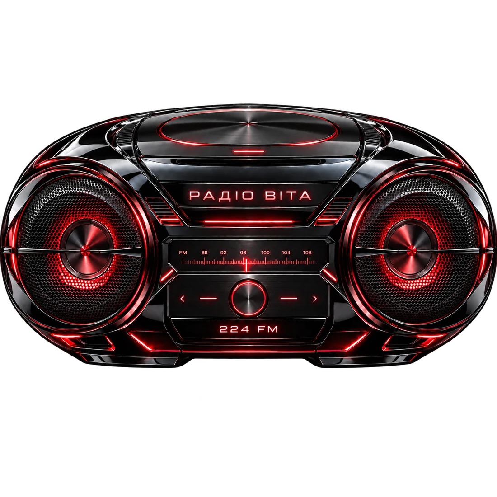

01
СИСТЕМА ВІТА
ВІТА
СПІВАЧКА НОВОЇ ЕРИ
ВІ / 224
Вона не уявляє майбутнє.
Вона в ньому живе.
Музика, мода, відео й цифровий простір зібрані в одну систему. Обери двері.
02
F*CK SHOW
з Фростером та Ро́маном
03
МУЗИЧНА КІМНАТА ВІТИ
ПРО ВІТУ
СПІВАЧКА
СПІВАЧКА
НОВОЇ ЕРИ
ВІТА — артистка, чий світ існує на межі музики, кіно та майбутнього.
Її звучання поєднує інтелектуальний денс-поп, синтвейв і сучасний диско-хаус. Візуальна мова ВІТИ — холодне світло, мокрі поверхні, швидкість, міста після дощу й мода без зайвого блиску.
Система Віта збирає пісні, відео, образи й цифрові історії в один безперервний простір.
01 / МУЗИКА
РАДІО ВІТА 224 FM
Обери сигнал. Увімкни уривок.

02 / ВІДЕО
ВІЗУАЛЬНІ СИГНАЛИ
П’ять сцен Системи Віта. Одна історія.
03 / СВІТ ВІТИ
СИСТЕМА
СИСТЕМА
ВІТА
Це не декорація довкола музики, а окремий світ, де звук переходить у кадр, кадр — у моду, а мода — у майбутнє.
УВІЙТИ ДО ВІЗУАЛЬНОГО АРХІВУ ↓
ВІЗУАЛЬНИЙ АРХІВ
ВІТА — АРТИСТКА
Фотоальбом Системи. Архів буде розширюватися.
СОЦІАЛЬНІ МЕРЕЖІ / 224 FM
СЛІДУЙ ЗА ВІТОЮ
КОНТАКТИ / 224 FM
ДЛЯ ПРЕСИ, СПІВПРАЦІ
НАПИСАТИ ВІТІ ↗
ДЛЯ ПРЕСИ, СПІВПРАЦІ
ТА BOOKING
З питань преси, співпраці, booking і лейблу — напишіть ВІТІ в соціальних мережах.